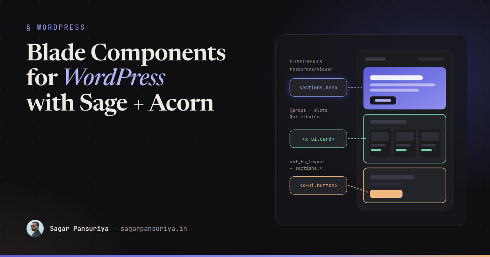
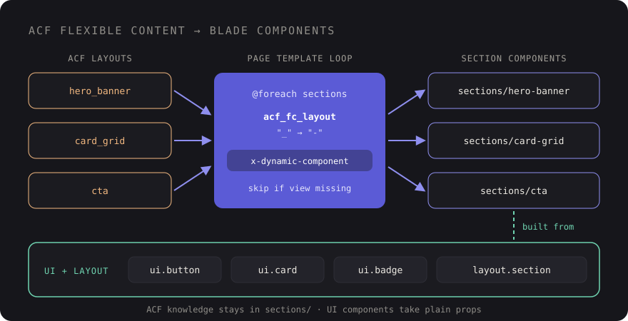

A Reusable Blade Component Library for WordPress with Sage and Acorn


Open the theme folder of a typical WordPress site that's a few years old and you'll find the same button markup copied into forty template parts, each with slightly different classes. Someone changes the brand colour, and a week later a client emails a screenshot of the one page that still has the old one.
If you build themes with Roots Sage, you already have the fix: Blade components, powered by Acorn. They're the same components Laravel developers use every day, running inside WordPress. Treated as a proper library rather than a folder of partials, they change how a theme ages.
This post walks through how I structure a component library in Sage: anonymous vs class-based components, props and slots, attribute merging with Tailwind, wiring components to ACF flexible content, and keeping the whole thing documented.
Why components instead of partials
@include('partials.button') works, but it's a loose contract. Any variable in
scope leaks in, nothing says which data the partial expects, and you can't pass extra HTML
attributes without adding a new variable each time. Components give you:
- Declared props with defaults, so the API of each piece is visible at the top of the file.
- Slots for passing markup in, instead of stuffing HTML into strings.
- An attribute bag that forwards
class,id,aria-*and anything else to the right element. - Isolation: a component only sees what you pass it.
Anonymous components: the default choice
An anonymous component is just a Blade file in resources/views/components. No PHP
class, no registration. resources/views/components/ui/button.blade.php becomes
<x-ui.button>:
{{-- resources/views/components/ui/button.blade.php --}}
@props([
'href' => null,
'variant' => 'primary',
'size' => 'md',
])
@php
$variants = [
'primary' => 'bg-brand-600 text-white hover:bg-brand-700',
'secondary' => 'bg-white text-brand-700 ring-1 ring-brand-200 hover:bg-brand-50',
'ghost' => 'text-brand-700 hover:bg-brand-50',
];
$sizes = [
'sm' => 'px-3 py-1.5 text-sm',
'md' => 'px-5 py-2.5 text-base',
'lg' => 'px-6 py-3 text-lg',
];
$classes = 'inline-flex items-center gap-2 rounded-lg font-semibold transition '
. $variants[$variant] . ' ' . $sizes[$size];
@endphp
@if ($href)
<a href="{{ $href }}" {{ $attributes->class($classes) }}>{{ $slot }}</a>
@else
<button {{ $attributes->merge(['type' => 'button'])->class($classes) }}>{{ $slot }}</button>
@endifUsage reads like HTML, which is exactly why front-end developers pick it up quickly:
<x-ui.button :href="get_permalink($post)" variant="secondary" size="sm">
Read more
</x-ui.button>
<x-ui.button type="submit" class="w-full" aria-describedby="form-help">
Send message
</x-ui.button>Anything declared in @props becomes a variable. Everything else (type,
class, aria-describedby) lands in $attributes and is
rendered on the element. I use anonymous components for the large majority of a library:
buttons, badges, cards, containers, headings, icons.
Class-based components: when there's real logic
Reach for a class when a component needs to fetch or prepare data, or when the logic would make the Blade file hard to read. Acorn gives you the generator:
wp acorn make:component PostCardThat creates a class in app/View/Components and a view in
resources/views/components. Public properties and methods are available in the
view:
<?php
namespace App\View\Components;
use Illuminate\View\Component;
use WP_Post;
class PostCard extends Component
{
public function __construct(
public WP_Post $post,
public bool $showExcerpt = true,
) {}
public function title(): string
{
return get_the_title($this->post);
}
public function image(): ?string
{
return get_the_post_thumbnail($this->post, 'medium_large', ['class' => 'aspect-video w-full object-cover']) ?: null;
}
public function readingTime(): int
{
$words = str_word_count(wp_strip_all_tags($this->post->post_content));
return max(1, (int) ceil($words / 230));
}
public function render()
{
return view('components.post-card');
}
}{{-- resources/views/components/post-card.blade.php --}}
<article {{ $attributes->class('overflow-hidden rounded-2xl bg-white shadow-sm') }}>
@if ($image())
{!! $image() !!}
@endif
<div class="p-6">
<h3 class="text-xl font-semibold">
<a href="{{ get_permalink($post) }}">{{ $title() }}</a>
</h3>
<p class="mt-1 text-sm text-gray-500">{{ $readingTime() }} min read</p>
@if ($showExcerpt)
<p class="mt-3">{{ get_the_excerpt($post) }}</p>
@endif
</div>
</article>Now every loop in the theme is one line: <x-post-card :post="$post" />.
A useful rule of thumb: if the Blade file of an anonymous component starts to need a big
@php block that queries WordPress, promote it to a class. If you only need data
for a whole template rather than a component, a Sage View Composer is often the better
fit.
Slots: passing markup in
The default $slot covers the simple case. Named slots handle components with
several regions, like a card with a header, body and footer:
{{-- resources/views/components/ui/card.blade.php --}}
@props(['padded' => true])
<div {{ $attributes->class(['rounded-2xl bg-white shadow-sm', 'p-6' => $padded]) }}>
@isset($header)
<header {{ $header->attributes->class('mb-4 border-b pb-4') }}>{{ $header }}</header>
@endisset
{{ $slot }}
@if (isset($footer) && $footer->isNotEmpty())
<footer class="mt-6 flex gap-3">{{ $footer }}</footer>
@endif
</div><x-ui.card>
<x-slot:header class="flex items-center justify-between">
<h2>Upcoming events</h2>
<x-ui.badge>3 new</x-ui.badge>
</x-slot:header>
…
<x-slot:footer>
<x-ui.button href="/events">All events</x-ui.button>
</x-slot:footer>
</x-ui.card>Note the attributes on the slot itself. $header->attributes lets the caller
adjust the wrapper of a region without the component growing a prop for every case.
Attribute merging and Tailwind
There are two main methods on the attribute bag, and they're worth knowing precisely:
$attributes->merge(['class' => '…'])appends the caller's classes to yours, and lets the caller override other attributes.$attributes->class([...])does the same for classes, but accepts a conditional array:['p-6' => $padded].
The catch with Tailwind: "append" means both classes end up in the markup. If the component
has p-6 and the caller passes p-10, you get
class="… p-6 p-10", and which one wins depends on the order of the rules in the
generated CSS, not the order in the attribute. Sometimes it works, and that's the dangerous
part.
Three habits avoid the problem:
- Expose design decisions as props, like
variant,sizeandpaddedabove, instead of expecting callers to override utilities. - Let
classadd, not fight. Callers pass layout and positioning (w-full,mt-8,col-span-2), not properties the component already sets. - Write full class names. Tailwind finds classes by scanning your
source files as text, so
"bg-{$color}-600"will never be generated. Map values to complete strings, as the$variantsarray does.
Components inside ACF flexible content
This is where a component library really pays off in WordPress. Each flexible content layout maps to one section component, and the page template just loops.

The loop is short. The layout name from ACF becomes the component name:
{{-- resources/views/partials/flexible-content.blade.php --}}
@foreach (get_field('sections') ?: [] as $section)
@php
$component = 'sections.' . str_replace('_', '-', $section['acf_fc_layout']);
@endphp
@if (view()->exists("components.{$component}"))
<x-dynamic-component :component="$component" :section="$section" />
@elseif (WP_DEBUG)
<!-- Missing section component: {{ $component }} -->
@endif
@endforeachA layout called card_grid renders
components/sections/card-grid.blade.php, which is built from the same UI pieces
as the rest of the site:
{{-- resources/views/components/sections/card-grid.blade.php --}}
@props(['section'])
<x-layout.section :id="$section['anchor'] ?? null" :background="$section['background'] ?? 'white'">
@if (! empty($section['heading']))
<h2 class="text-3xl font-bold">{{ $section['heading'] }}</h2>
@endif
<div class="mt-10 grid gap-6 md:grid-cols-3">
@foreach ($section['cards'] ?? [] as $card)
<x-ui.card>
<h3 class="text-lg font-semibold">{{ $card['title'] }}</h3>
<p class="mt-2">{{ $card['text'] }}</p>
@if (! empty($card['link']))
<x-slot:footer>
<x-ui.button :href="$card['link']['url']" variant="ghost">
{{ $card['link']['title'] }}
</x-ui.button>
</x-slot:footer>
@endif
</x-ui.card>
@endforeach
</div>
</x-layout.section>Adding a new section type is now a predictable routine: create the ACF layout, create one
Blade file with a matching name. Nobody touches the page template. The
view()->exists() check means a layout that's been added in ACF but not built
yet won't break the page.
Keep ACF-specific knowledge in the sections layer. UI components like
x-ui.card should take plain props and never call get_field().
That's what keeps them reusable in templates, widgets and anywhere else.
Folder conventions
A structure that stays readable as the library grows:
resources/views/components/
├── ui/ button, badge, card, icon, input → <x-ui.button>
├── layout/ container, section, grid → <x-layout.section>
├── sections/ one file per ACF layout → rendered dynamically
└── post-card.blade.php (class-based, app/View/Components/PostCard.php)- ui: small, generic, no WordPress calls.
- layout: spacing and width rules, so sections don't each invent their own padding.
- sections: page-level blocks that know about ACF data shapes.
File names in kebab-case, matching ACF layout names with underscores swapped for hyphens. Boring and consistent beats clever every time.
Documenting the library
Components only get reused if people know they exist. Two cheap habits cover most of it.
First, a comment header in every component. It's the first thing anyone sees when they open the file:
{{--
Button
Props: href (string|null) variant: primary|secondary|ghost size: sm|md|lg
Slots: default (label)
Usage: <x-ui.button :href="$url" variant="secondary">Read more</x-ui.button>
--}}Second, a styleguide page. Sage picks up page templates from a Template Name
comment, so create resources/views/template-styleguide.blade.php, render every
component in each variant, and restrict it to logged-in editors with a
current_user_can() check. It becomes a living reference for developers and a
quick visual regression check whenever you touch the Tailwind config.
A checklist for your component library
- Default to anonymous components; promote to a class when there's real data logic.
- Declare every prop with
@propsand a sensible default. - Use named slots for regions, and slot attributes for small wrapper tweaks.
- Expose variants and sizes as props; let
classonly add layout. - Never build Tailwind class names from string interpolation.
- One section component per ACF layout, rendered with
x-dynamic-component. - Keep
get_field()out of UI components. - Header comment in every file, plus a private styleguide page.
None of this needs a big rewrite. Start with the button that's been copied forty times, turn
it into <x-ui.button>, and replace usages as you touch templates. A few
sprints later, the next brand colour change will be one line.
Discussion